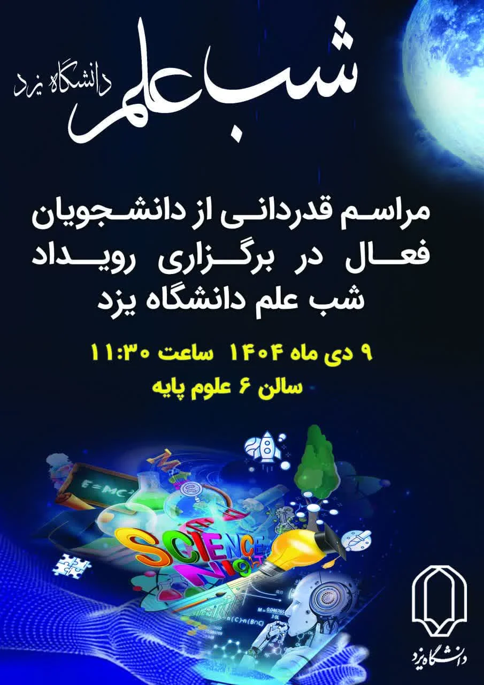

پوستر رویداد
شب علم

شب علم

به صورت خودکار تغییر میکند
شب علم
در این رویداد تمامی انجمن های علمی برای خود غرفه ای درست کردند و از تمامی دستاورد هایشان رونمایی کردند این رویداد یکی از بزگترین رویداد هایی بود که در سال تحصیلی دانشگاه ان را اچرا کرد دانشجویان در این رویداد چیز های بسیار زیاد و متنوعی از تمامی علم ها یاد گرفتند.